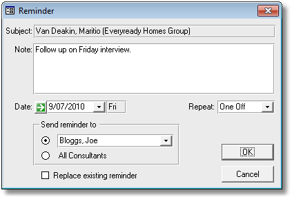

|
|
PRS News & Tips | July 2010 |
Latest News
We’ve just released PRS 8.0.2 — this release adds exciting new features including PRS Reminders integration with the Outlook Calendar and user definable Personnel and Vacancy fields (see Tips and Tricks below).
A lot of the enhancements are focused on creating a smoother user experience and we’ve put a lot of work into bug squashing, stability and performance — if you are using the PRS 8.0.1 Client we recommend that you upgrade to 8.0.2
To download and upgrade go to the Installing the Latest PRS Client section on our Updates web page and follow the instructions.
For a full list of the changes since the previous release see the PRS Changelog web page.
Tips and Tricks
Posting PRS Reminders to Microsoft Outlook
 in version 8.0.2
in version 8.0.2
Tick the Write PRS reminders to Microsoft Outlook Calendar option (Tools→Options menu command):
From now on all new reminders that you create in the PRS:

Will also appear as appointments in your Microsoft Outlook Calendar:
Vacancy and Personnel custom fields
in version 8.0.2
This feature provides a way to add new items of information to Vacancies and Personnel that are not already catered for by an existing field.
Here is an example scenario: on all our contract vacancies we need to record the name of the supervisor to report to (not necessarily the client) plus a client order number. First we need to create a template for the Unpublished Job Details Vacancies field which is where we will record the additional vacancy details.
-
Ctrl+Click on the Unpublished Job Details field in the PRS Vacancies form to enter the template:

-
Edit the template:
From here on in the template text will be automatically copied into the Unpublished Job Details whenever a new vacancy is created:

This will remind the user to enter the additional information:

Exactly the same technique can be used to add additional Personnel information into the Synopsis field on the Personnel Summary form (click the Personnel Summary button on the Personnel form to open the Personnel Summary form).
User defined Vacancy status
in version 8.0.2
In addition to the standard vacancy statuses you can define up to two additional custom Vacancy statuses. Custom status values are entered on Appearance page of the PRS Tools→Options dialog:

Once set they appear in the Status drop-down list on the Vacancies form:

You can also use the Find command on the Vacancies form to search for vacancies with a user defined status:
View the message that you are replying to
in version 8.0.2
You can view the original message when replying to an email by clicking the View sender’s message link at the bottom of the email form:

Need help?
Our Support web page explains how to get answers to PRS questions and includes links to articles on Maintaining Database Reliability and Performance and PRS Best Practice Deployment.
|
Important
|
If you no longer wish to receive this newsletter please email support@methods.co.nz with the word UNSUBSCRIBE in the subject line. |